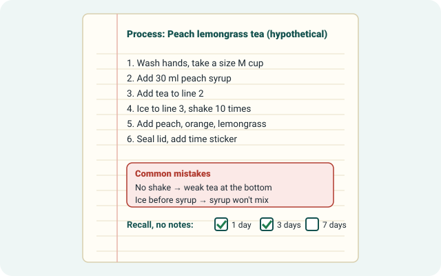

K7 · Self-directed learning and career development › Level 2 Starting
Learn a new task fast by watching, trying, writing your own process notes and testing yourself
This lesson completes Sheet 6: Process notebook. Print template.
1. Objectives
- Write a new process in your own words, including the steps and common mistakes.
- Test yourself on the process without your notes, after 1, 3 and 7 days.
2. Retrieval warm-up
- Which questions should you ask straight away, and which should go in your log for later?
- What are the 4 parts of a work message?
Answers
- Ask urgent questions that affect customers or safety at once. Log the rest and ask them together when your trainer is free.
- Greeting and name; what; what you need; thanks.
Review: Your first week.
3. Explanation
In a new job, you are often shown something once and then left to do it. Fast learners are not born with great memories. They use the right learning methods.
Which methods work? A large research review (Dunlosky and colleagues, 2013) rated two methods highest. They are practice testing (recalling without looking) and spaced practice (reviewing over several days). Rereading and highlighting were rated low.
The 4-step loop for learning a new task:
The new-task learning loop
- Watch a demonstrationAsk "why this step?" when you do not understand.
- Try itDo it while your trainer is still beside you.
- Write your own notesIn your own words, right after the shift.
- Test yourselfRecall without your notes, then compare.
A process page has 3 parts:
- Numbered steps. Write exact figures: how many ml, how many minutes, which line.
- Common mistakes and their effects. Ask your trainer: "Where do new people usually go wrong?"
- Review boxes for 1, 3 and 7 days later.

How to test yourself. Turn your notebook face down. Write or say the steps. Turn it over and compare. Circle any step you got wrong, and pay attention to it next time.
Why write in your own words? Photographing a document is quick, but you do not have to remember anything. Writing it yourself forces you to recall, and shows where you do not yet understand.
For processes involving safety or money, do not rely on memory alone. Follow your workplace's written instructions.
4. Workplace example
Hypothetical scenario. Lina works part-time at a bubble tea shop. On her first day, the manager shows her how to make the 5 best-selling drinks.
After her shift, Lina spends 10 minutes writing 5 process pages. The peach, orange and lemongrass tea has 6 steps and 2 common mistakes, as in Figure 1.
The next day, before her shift, Lina turns her notebook over and writes out all 5 drinks. She gets the syrup amount wrong for lychee tea. She circles that step.
On day 3 and day 7, Lina tests herself again. By day 7 she remembers all 5 drinks. She asks the manager to show her 3 new ones.
Why this works: Lina does not reread her notes many times. She recalls and then compares, so she knows exactly which step is weak. The 1–3–7 schedule spreads the reviews out, with only a few minutes each time.
5. Practice
Hypothetical scenario. You are an intern in a company's admin office. Your trainer shows you how to enter invoices in a spreadsheet: open the month's file, add a new row, enter the date, invoice number, supplier and amount. Save the file with the date in its name. She warns: new people often type amounts with a thousands separator, which breaks the total formula.
Write one process notebook page for this task. Plan your reviews.
Hint 1
Turn each action into one numbered step. Name the columns to fill in.
Hint 2
The common mistake is already in the scenario. Write both the mistake and its effect.
Model answer
Process: Entering invoices in the spreadsheet
- Open the current month's file in the shared folder.
- Add a new row below the last one.
- Fill in 4 columns: date, invoice number, supplier, amount.
- Type the amount as digits only, with no separators.
- Check that the total at the bottom has updated.
- Save the file with a name like "Invoices_2026-11_day14".
Common mistake: typing amounts with separators → the total formula breaks.
Review without notes: after 1 day, 3 days, 7 days.
(The process is hypothetical, for illustration.)
6. Self-check
Choose an answer. Every option has an explanation.
Question 1. You have just been shown how to pack online orders. Which way of learning works best?
-
Not quite. Rereading works poorly because you do not have to recall anything.
-
Correct. Correct. This is practice testing, which research rates highly.
-
Not quite. Highlighting was rated low by Dunlosky and colleagues (2013).
Question 2. Which review schedule is spaced practice?
-
Not quite. Cramming helps short-term memory, but you forget easily after a few days.
-
Correct. Correct. Spreading reviews over several days helps you remember longer.
-
Not quite. Then you learn only after causing an error.
Question 3. While your trainer demonstrates, which question helps you fill in "Common mistakes"?
-
Correct. Correct. Knowing common mistakes in advance helps you avoid them from the start.
-
Not quite. The answer is usually vague and does not help you note specific mistakes.
-
Not quite. This does not help you learn the task. Ask about pay rules separately.
Question 4. When you test yourself, you get step 3 wrong. What should you do?
-
Not quite. You lose important information about where you are weak.
-
Correct. Correct. Knowing exactly where you went wrong is a key benefit of self-testing.
-
Not quite. Mistakes during self-testing are normal and useful, not a sign to stop.
7. Reflection
- What was the last task you had to ask someone about again? Which step did you forget?
- Do you learn by rereading? How will you switch to testing yourself?
8. Real-world application
In the next 7 days, choose a new task at school, at home or at your part-time job. Write one process page on Sheet 6. Test yourself after 1 day and 3 days. Set a calendar reminder for the 7-day review.
9. Metadata
| skill | K7 · Self-directed learning and career development |
|---|---|
| level | Level 2 · Starting |
| group | N2 |
| framework_map | WEF: Curiosity and lifelong learning; SkillsFuture CCS: Learning Agility; NACE: Career and Self-Development; LifeComp: L3 Managing learning (reference only) |
| original | Vietnamese version |
| updated | 2026-11-14 |
Finish the lesson
Mark it as done and the site suggests reviews after 1, 3 and 7 days. The data stays on your device only.
Suggested reviews: